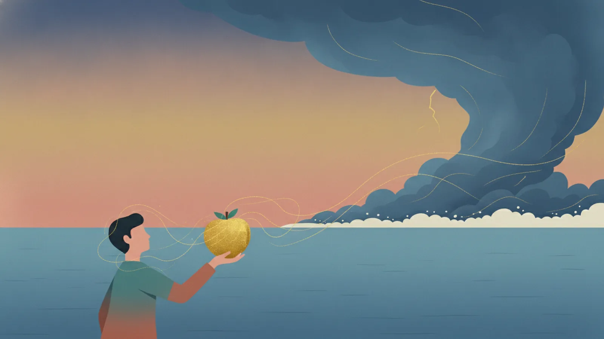

No.001
時間
いまを、未来より重くみてしまう
現在バイアス|Present Bias
- かつての正解
- 明日の保証がない環境では、目の前の食料を確保する個体が生き残った。遠い将来の価値を大きく割り引く回路は、生存の知恵そのものだった。
- 現代で起きていること
- 気候変動対策の先送り。インフラ更新や予防医療への過少投資。夜更かしから財政赤字まで、規模を問わず同じかたちで現れる。
- 処方箋
- フューチャー・デザイン（西條辰義（さいじょう・たつよし／高知工科大学などで研究された、「仮想将来世代」の役を議論に招く手法）。岩手県矢巾町の水道事業で実践）。決めた未来が自動で実行されるコミットメント設計。
処方箋の系統
制知話